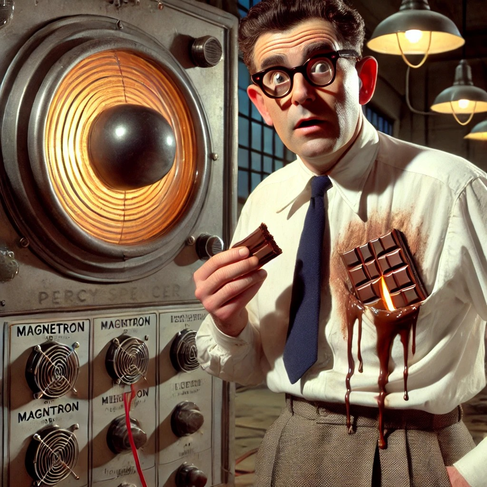
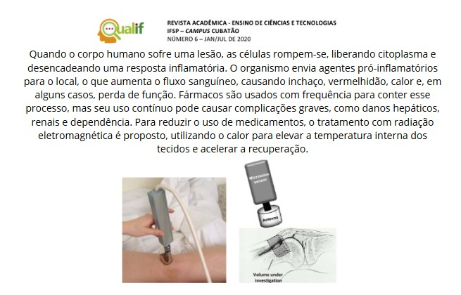
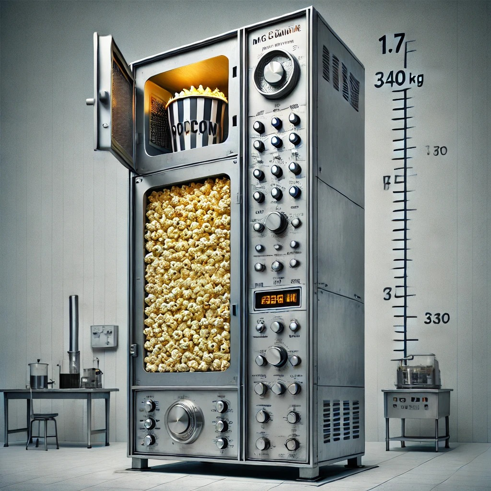

Percy Spencer era um engenheiro americano que trabalhava na Raytheon, uma empresa que produzia magnetrons, componentes usados em radares. Durante a Segunda Guerra Mundial, o micro-ondas foi desenvolvido com o objetivo de detectar aeronaves inimigas. As micro-ondas geradas pelos radares eram refletidas de volta pelas aeronaves, e o eco fornecia informações precisas sobre sua localização, aproximação, direção e outros detalhes.
Em 1945, durante testes com um novo tubo de vácuo, Percy Spencer percebeu que o chocolate em seu bolso havia derretido. Ele rapidamente concluiu que as micro-ondas agitavam as moléculas, aquecendo os alimentos. O primeiro forno micro-ondas pesava cerca de 340 kg, tinha quase 1,70 m de altura e emitia uma radiação quase três vezes maior que a dos modelos atuais. A pipoca foi o primeiro alimento a ser preparado com o micro-ondas.
Funcionamento
Por Aquecimento Dialético
O aquecimento dielétrico, que utiliza radiação de micro-ondas, continua sendo empregado em radares e sistemas de radiogoniometria, especialmente em navios e aeronaves. No aquecimento de alimentos, as micro-ondas eletromagnéticas fazem com que moléculas polares, como as de água, vibrem, gerando calor. Essas moléculas absorvem energia do campo elétrico gerado pelas ondas e, ao cessar a radiação, essa energia é liberada na forma de calor, aquecendo o alimento. A presença de água é essencial para o processo, o que explica por que alimentos muito secos não aquecem bem. Moléculas apolares ou cristalinas, como as de porcelana, não absorvem eficientemente as micro-ondas.
Por Condução Iônica
O aquecimento por condução iônica ocorre quando há íons dissolvidos no alimento. Por exemplo, na água pura, há poucos íons devido à sua dissociação, mas ao adicionar sal (NaCl), os íons de sódio (Na+) e cloro (Cl-) se dissociam. A água com sal aquece mais que a água pura, pois o campo eletromagnético das micro-ondas faz com que esses íons migrem, gerando calor por fricção.
Com isso, Spencer começou a realizar diversos experimentos em que colocava alimentos dentro do tubo de magnetron e constatou que eles estouravam devido à pressão interna, notando que haviam sido cozinhados de dentro para fora. O primeiro alimento a ser produzido pelo micro-ondas foi um saco de pipoca.
Patente e Comercialização
O que resultou na primeira patente para uso das micro-ondas para efeitos culinários, em 1946. Após essa patente, conseguiu, um ano depois, em 1947, produzir e comercializar o primeiro forno micro-ondas da história. Este media 1,8 metros de altura, pesava 340 kg e custava cerca de 5.000 dólares (o equivalente hoje a 20.150 reais).
Explicação da Simulação
A simulação serve para mostrar visualmente como as ondas de micro-ondas funcionam dentro de um forno micro-ondas, explicando o processo de aquecimento dos alimentos. Ela permite que você interaja com os controles do micro-ondas, ajustando a potência e o tempo, para ver como esses ajustes influenciam o comportamento das ondas. Isso ajuda a entender:
- Como as micro-ondas aquecem os alimentos: Ao ver as ondas se movendo dentro do visor.
- A influência da potência: Aumentar ou diminuir a potência mostra como isso afeta a intensidade das ondas.
- A importância do tempo: Ver o tempo diminuir e as ondas pararem quando o ciclo termina ilustra o processo de aquecimento completo.
Em suma, a simulação é uma ferramenta educativa e interativa para compreender o funcionamento de um micro-ondas. Você pode acessar a simulação através do link acima para experimentar como tudo isso funciona em tempo real.